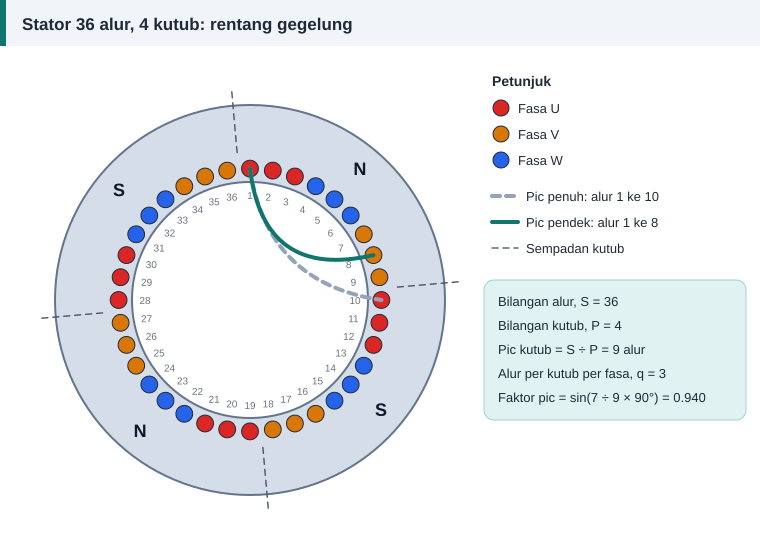

Pengiraan belitan
Pic Kutub, Rentang Gegelung dan Faktor Pic
Ambil stator 36 alur, 4 kutub seperti dalam rajah. Dengan tiga langkah kiraan, anda boleh menentukan sejauh mana setiap gegelung patut merentang dan berapa banyak voltan yang berkurang akibat memendekkannya.


Langkah 1: kira pic kutub
Pic kutub = S ÷ P = 36 ÷ 4 = 9 alur
Pic kutub ialah jarak dari pusat satu kutub ke pusat kutub bersebelahan, diukur dalam bilangan alur. Ia bersamaan 180 darjah elektrik.
Langkah 2: pilih rentang gegelung
Gegelung pic penuh merentang 9 alur: satu sisi di alur 1 dan sisi satu lagi di alur 10. Juruteknik menulisnya sebagai 1–10. Gegelung pic pendek merentang kurang daripada itu, contohnya 1–8, iaitu 7 alur.
Jangan tersilap kira
Rentang ialah nombor alur kedua tolak nombor alur pertama. Rentang 1–8 ialah 7, bukan 8.
Langkah 3: kira faktor pic
kp = sin(rentang ÷ pic kutub × 90°)
Untuk rentang 7 daripada pic kutub 9, kp = sin(7 ÷ 9 × 90°) = sin 70° = 0.940. Maksudnya gegelung itu menghasilkan 94% daripada voltan gegelung pic penuh dengan bilangan lilitan yang sama.
| Pic kutub (alur) | Rentang (alur) | Ditulis sebagai | Faktor pic |
|---|---|---|---|
| 6 | 6 | 1–7 | 1.000 |
| 6 | 5 | 1–6 | 0.966 |
| 6 | 4 | 1–5 | 0.866 |
| 9 | 9 | 1–10 | 1.000 |
| 9 | 8 | 1–9 | 0.985 |
| 9 | 7 | 1–8 | 0.940 |
| 9 | 6 | 1–7 | 0.866 |
| 12 | 12 | 1–13 | 1.000 |
| 12 | 10 | 1–11 | 0.966 |
| 12 | 9 | 1–10 | 0.924 |
Mengapa sengaja memendekkan rentang
- Hujung gegelung menjadi lebih pendek, jadi kuprum dan rintangan berkurang.
- Harmonik ke-5 dan ke-7 dalam gelombang medan berkurang, lalu motor lebih senyap dan lancar. Rentang sekitar lima per enam pic kutub paling berkesan mengurangkan kedua-dua harmonik itu.
- Gegelung lebih mudah dibentuk dan dimasukkan.
Harganya ialah sedikit tambahan lilitan untuk mengimbangi faktor pic yang kurang daripada satu.
Belitan satu lapis: kes khas
Dalam belitan satu lapis jenis sepusat atau rantai, rentang setiap gegelung memang berbeza-beza. Namun alur yang diduduki oleh setiap fasa tetap sama seperti belitan pic penuh, jadi bagi belitan satu lapis yang lazim faktor pic berkesan ialah 1. Faktor pic kurang daripada satu hanya terpakai untuk belitan dua lapis berpic pendek. Kalkulator di laman ini mengambil kira perkara itu secara automatik.
Kesan pada lilitan semula
Jika anda menukar rentang, bilangan lilitan mesti dilaraskan supaya fluks kekal:
N baharu = N asal × kp asal ÷ kp baharu
Contoh: belitan asal 20 lilitan pada rentang 1–8 (kp 0.940) ditukar kepada 1–9 (kp 0.985). N baharu = 20 × 0.940 ÷ 0.985 = 19.1, dibundarkan kepada 19 lilitan.
Tanpa sebab yang kukuh, kekalkan rentang asal. Faktor pic hanya separuh daripada cerita; separuh lagi ialah faktor agihan.
Rujukan dan bacaan lanjut
Artikel berkaitan
Faktor Agihan dan Faktor Belitan Motor Tiga Fasa
Gegelung yang diagih dalam beberapa alur menghasilkan voltan yang sedikit berbeza fasa. Faktor agihan mengukur kesannya, dan bersama faktor pic ia membentuk faktor belitan.
Belitan Satu Lapis dan Dua Lapis: Perbezaan dan Pilihan
Belitan satu lapis mudah dimasukkan, belitan dua lapis memberi gelombang medan yang lebih licin. Bandingkan bilangan gegelung, penebat, kegunaan dan kesannya terhadap lilitan semula.
Formula Lilitan Per Fasa: E = 4.44 f Φ N kw Dijelaskan
Satu persamaan menghubungkan voltan, frekuensi, fluks dan bilangan lilitan. Fahami asal-usul angka 4.44 dan cara menggunakannya untuk mengira lilitan per fasa motor.